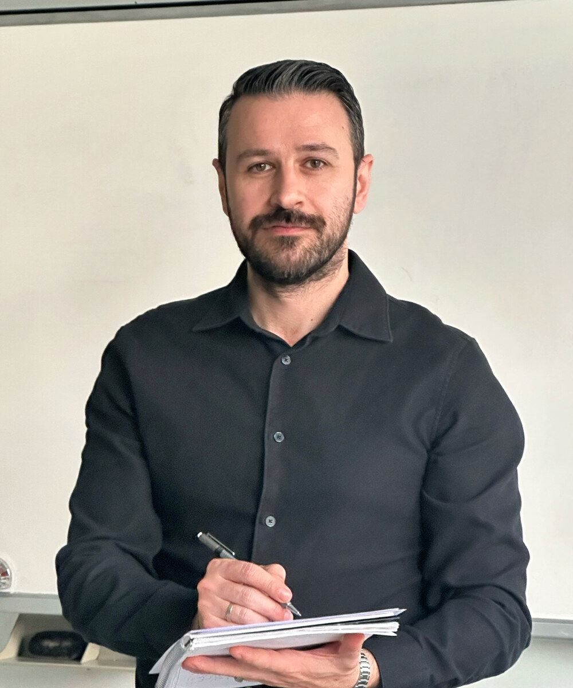

Fotoğrafın buraya gelecekhoca.jpg
Merhaba, ben Timur Yıldırım
16 yıldır devlet okullarında fizik öğretmenliğim yapıyorum. Hem okul sınavları hem YKS hazırlığı için öğrencilere destek veriyorum. Yıllar içinde Türkiye derecesi yapan pek çok öğrenci yetiştirdim. Uzmanlık alanım bütün lise fiziği — 9. sınıftan 12. sınıfa, TYT ve AYT dahil.
Bu siteyi açma sebebim çok basit: derslerimde en çok duyduğum cümle "Ben fizik yapamıyorum hocam" idi. Bunu marka adına dönüştürdüm; çünkü o cümleyi söyleyen her öğrenci yanılıyor. Doğru anlatımla, doğru sırayla ve doğru sayıda örnekle herkes fizik yapabilir — bunu 16 yıldır kanıtlıyorum.
Fizik öğretmenliği yaparken aynı zamanda Anadolu Üniversitesi Sosyoloji bölümünü aktif olarak okuyorum. Hobi değil, bilinçli bir seçim: öğrencinin gibi düşünebilmek, doğru iletişim kurabilmek ve veliyi sürece doğru konumlandırabilmek — bunlar fizik öğretmenliğinin görünmeyen ama belirleyici tarafı. Psikoloji ve sosyolojiye olan ilgim, sınıf içindeki ve birebir derslerdeki iş tarzımı şekillendiriyor.
Eğitim
Lisans ve devam eden öğrenim.
-
Devam Ediyor
Anadolu Üniversitesi · Sosyoloji
Öğrenciyle ve veliyle daha bütüncül ilişki kurabilmek için aktif olarak okuduğum ikinci alan.
-
Lisans
Kocaeli Üniversitesi · Fizik Bölümü
Öğretmenliğimin temelini oluşturan kuramsal ve uygulamalı fizik eğitimi.
Deneyim
16 yıllık öğretmenlik yolculuğu.
-
2009 – Bugün
Fizik Öğretmeni · Devlet Okulu
Aktif görev. 9-12. sınıflarda lise fiziği; okul sınavları ve YKS hazırlığında destek.
-
Yıllar boyu
Birebir Özel Ders
Devlet okulu görevimin yanında öğrencilere bireysel YKS hazırlık desteği.
-
Süregelen başarı
Türkiye Derecesi Yapan Öğrenciler
Yıllar içinde fizikte Türkiye derecesi elde eden çok sayıda öğrenci yetiştirdim.
Öğretim felsefem
Üç ilke üzerine kurulu.
Ezber değil, anlamak
Formülün arkasındaki "neden" cevaplanmadıkça bilgi geçici kalır. Her konuyu önce sezgisel sonra matematiksel anlatırım. Maarif Modeli'nin "kavramsal beceriler" çerçevesiyle de bu birebir örtüşür.
Görsel önce gelir
Bir denklem yazmadan önce öğrencinin "ne olduğunu" görmesi şart. Simülasyonlar, deneyler ve görsel anlatımlar derslerimin omurgası.
Öğrenci + veli + öğretmen üçgeni
Öğrenmek tek başına gerçekleşmez. Sosyolojiye olan ilgimin sebebi de bu: öğrencinin nasıl düşündüğünü, velinin nereye konumlanması gerektiğini ve sınıfı bir grup olarak okumayı önemsiyorum.
Sayılarla
16 yıllık öğretmenlikten kalanlar.
16 yıl
Fizik öğretmenliği tecrübesi.
Türkiye Derecesi
Yetiştirdiğim öğrenciler arasında pek çok Türkiye derecesi.
9–12. Sınıf
Bütün lise fiziği — uzmanlık alanım.
Maarif Uyumlu
Yeni müfredata göre güncellenen içerikler.
Sıkça Sorulan Sorular
Öğrencilerin ve velilerin en çok merak ettikleri.
Site içerikleri ücretsiz mi?
YouTube video dersleri, online testler, simülasyonlar ve Maarif Modeli bilgileri tamamen ücretsiz. Birebir özel ders, PDF not paketi ve online kurs ücretli hizmetlerdir — detaylar Hizmetler sayfasında.
Hangi sınıflar için uygun?
9, 10, 11 ve 12. sınıf öğrencileri ile YKS'ye (TYT/AYT) hazırlanan herkes için uygundur. Maarif Modeli'ne göre öğrenim gören 9. sınıflar için özel içerik de yayında.
Birebir özel ders veriyor musunuz?
Evet. Online olarak birebir özel ders veriyorum. Başvuru için Hizmetler sayfasındaki forma yönelebilirsin — 24 saat içinde dönüş yaparım. Demo dersi ücretsiz.
Bir soruyla takıldım, sorabilir miyim?
Tabii. Instagram'dan veya e-posta üzerinden ulaşabilirsin.
Maarif Modeli'ne uyumlu mu içerikler?
Evet, 2024-25'te başlayan yeni müfredata göre içerikler güncelleniyor. Maarif Modeli sayfasında hangi yıl hangi sınıfların bu modelde olacağı, ilk Maarif YKS'sinin 2028'de yapılacağı gibi bilgiler var.
Sosyal medyadan takip edebilir miyim?
Instagram (@benfizikyapamiyorum) ve YouTube kanalımdan takip edebilirsin. Yeni video, soru çözümü ve içerikler oradan duyrulur.